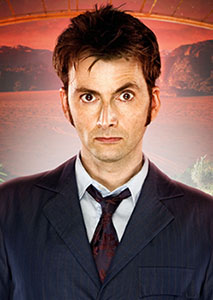

William Hartnell
November 1963 - October 1966
First regular appearance An Unearthly Child
William Hartnell
November 1963 - October 1966
First regular appearance An Unearthly Child
Patrick Troughton
October 1966 - June 1969
First regular appearance: The Power of the Daleks
Jon Pertwee
January 1970 - June 1974
First regular appearance: Spearhead from Space
Tom Baker
June 1974 - March 1981
First appearance: Robot
Peter Davison
March 1981 - March 1984
First appearance: Castrovalva
Colin Baker
March 1984 - December 1986
First appearance: The Twin Dilemma
Sylvester McCoy
September 1987 - December 1989
First appearance: Time and the Rani
Paul McGann
May 1996
First appearance: Doctor Who (TV movie)
Christopher Eccleston
March 2005 - June 2005
First appearance: Rose
David Tennant
June 2005 - January 2010
First appearance: The Christmas Invasion
The Personality and Appearance of the Tenth Doctor (taken from Wikipedia)
Personality
The Tenth Doctor speaks with an Estuary English accent, rather than the Lancashire dialect (Christopher Eccleston's own dialect) that the Ninth Doctor used, the Received Pronunciation of most earlier Doctors, or Tennant's natural Scottish English. David Tennant told SFX magazine in 2006 that Russell T Davies had asked him to drop his natural Scottish accent, because he felt "we'd like to not go for another obvious regional accent, because I suppose they'd done that". In a 23 December interview on BBC Radio 1, Tennant explained that a line had been scripted for the Christmas special explaining that the newly regenerated Doctor had imprinted on Rose Tyler's accent, "like a chick hatching from an egg", but the line was cut from the final episode.
The depictions of the personalities of the Tenth and Eleventh Doctors shared certain similarities[14][15] e.g. both being youthful, energetic, friendly, childlike, "good boyfriend Doctors", as Steven Moffat described them[16] and, according to Mark Gatiss "very human Doctors" when compared to other incarnations.
Appearance
The Doctor complains that his tenth incarnation is not "ginger". However, this incarnation was happy to have sideburns and to have more hair than his previous incarnation. He wears his own brown hair in various ways throughout the series: unstyled in "The Christmas Invasion", a 1950s-style quiff in "The Idiot's Lantern", and flattened forwards in "The Runaway Bride" and "The Day of the Doctor", but mainly styled it in a spiked up fashion throughout most of the series, with this style being described by friend and later one-time companion Wilfred Mott as being a, "Modern style sort of hair. All sticky-uppy". He has dark brown eyes and is perceived by most, including companions and other characters such as his future incarnation as "slim and a little bit foxy".
His costume was unveiled on 27 July 2005. He generally wears either a dark brown (with blue pinstripes) or a blue (with rust red pinstripes) four-buttoned suit, a shirt and a tie, a light brown faux-suede duster coat (which he claims was given to him by Janis Joplin), and different coloured pairs of Converse All-Star sneakers, depending on his suit. According to an interview on Parkinson, David Tennant and Russell T Davies got the idea for the Tenth Doctor's costume from an outfit Jamie Oliver had worn on Parkinson just after Tennant had taken the role.[21] David Tennant has commented that he would vary the combination of the buttons he fastened on his jacket in different episodes. Tennant thought the look was very geek chic.
The Doctor dons a pair of dark tortoise-shell rectangular frame glasses, an affectation (along with his signature footwear) borrowed from the Fifth Doctor. He also occasionally sports a pair of Red-Cyan 3D glasses, both as a joke and for practical reasons. The Tenth Doctor's costume became so popular that it has spawned numerous recreations (including a BBC-licensed replica of the Tenth Doctor's overcoat by AbbyShot Clothiers and a white/red version worn by Tennant when he co-hosted Comic Relief), and has been cited by costume designer Louise Page as the costume she is most proud of from her time on Doctor Who.
Matt Smith
January 2010 - December 2013
First appearance: The Eleventh Hour
Peter Capaldi
December 2013 - December 2017
First appearance: Deep Breath
Jodie Whittaker
December 2017 - present
First appearance: The Woman Who Fell to Earth